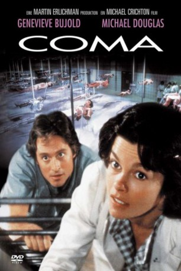

#1145 Coma
 
 IMDB-Wertung: 6.9 / 10
IMDB-Wertung: 6.9 / 10  Metascore: 60
Metascore: 60 
US-Thriller von Michael Crichton aus dem Jahre 1978. Die Ärztin Dr. Susan Wheeler wird Zeuge, wie in ihrem Krankenhaus scheinbar gesunde Menschen plötzlich versterben - und es werden immer mehr. Wer oder was steckt dahinter? Susan will der Sache auf den Grund gehen.
Jahr: 1978
Dauer: 113 Minuten
FSK: 16
Land: USA Studio: MGMTonspuren:
Untertitel:
Auflösung: 1080p (1920x1080) Größe: 7833 MB
Genre: Drama, Horror, Mystery, Thriller
Regisseur: Michael Crichton
Drehbuch: Michael Crichton, Robin Cook
Soundtrack: Jerry Goldsmith
Darsteller:
 Geneviève Bujold als Dr. Susan Wheeler
Geneviève Bujold als Dr. Susan Wheeler Michael Douglas als Dr. Mark Bellows
Michael Douglas als Dr. Mark Bellows Elizabeth Ashley als Mrs. Emerson
Elizabeth Ashley als Mrs. Emerson Rip Torn als Dr. George
Rip Torn als Dr. George Richard Widmark als Dr. Harris
Richard Widmark als Dr. Harris Lois Chiles als Nancy Greenly
Lois Chiles als Nancy Greenly- Frank Downing als Kelly
 Richard Doyle als Jim
Richard Doyle als Jim- Betty McGuire als Nurse
 Tom Selleck als Sean Murphy
Tom Selleck als Sean Murphy Harry Basch als Second Doctor
Harry Basch als Second Doctor- Joanna Kerns als Diane
- Benny Rubin als Mr. Schwartz
- Kurt Andon als 1st Cop
- Michael Mann als 2nd Technician
- David McKnight als Man in Elevator
 Ed Harris als Pathology Resident #2
Ed Harris als Pathology Resident #2- Susie Luner als Nurses
 Gerald Berns als Security Guard , uncredited
Gerald Berns als Security Guard , uncredited Jeffrey Corazzini als Patient , uncredited
Jeffrey Corazzini als Patient , uncredited Bob Dio als Subway Passenger , uncredited
Bob Dio als Subway Passenger , uncredited Nicholas Worth als Patterson Institute Chief of Security , uncredited
Nicholas Worth als Patterson Institute Chief of Security , uncredited- Hari Rhodes als Dr. Morelind
- Gary Barton als Computer Technician
- Alan Haufrect als Dr. Marcus
- Lance LeGault als Vince
- Michael MacRae als Chief Resident
- Charles Siebert als Dr. Goodman
- William Wintersole als Lab Technician
- Ernest Anderson als First Doctor
- Maury Cooper als Third Doctor
- Joni Palmer als Dance Instructor
- Kay Cole als Sally
- Tom Borut als Dr. Cowans
- Philip G. Brooks als Dr. Richards
- David Hollander als Jimmy
- Dick Balduzzi als 1st Maintenance Man
- Gary Bisig als 2nd Maintenance Man
- Wyatt Johnson als 2nd Cop
- Mike Lally als Security Man
- John Widlock als Norman
- Duane Tucker als 1st Man in Shower
- Del Hinkley als 2nd Man in Shower
- Paul Ryan als 1st Technician
- Sarina C. Grant als Woman in Elevator
- Gerald Benston als Anesthetist
 Robert Burton als Pathology Residents
Robert Burton als Pathology Residents- Joe Bratcher als Surgical Residents
- Martin Speer als Surgical Residents
- Roger Newman als Surgical Residents
Datei: X:\1978\Coma (1978, FSK16, 1920x1080).mkv seit 29.05.2015
Festplatte: HD 1971-1979
 Es gibt insgesamt 31 Filme in der Gruppe '1978'
Es gibt insgesamt 31 Filme in der Gruppe '1978'